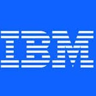

8+
Years of Experience
5
Companies
3
Countries
2
Graduate Degrees
Ocado Technology
Toronto, Canada
Software Engineering II, Product
Jul 2025 – Present
Full-Time · Current Role
- Led development of a modular 3D perception pipeline for a warehouse automation pick-and-place robot, achieving high throughput, reliability, and uptime while reducing operating costs. Built using the Kedro framework, enforcing atomic nodes as pure functions for maximum pipeline modularity.
- Integrated Mask2Former models with configurable versioning to dynamically load stable model versions onto the GPU, improving mean Average Precision (mAP) by 30%.
- Implemented a vectorized solution for converting 2D pixel coordinates to 3D world coordinates, enabling constant-time lookups.
- Developed an end-to-end pick and place candidate generation pipeline optimized for packing efficiency, improving throughput by 63% while achieving a 92% autonomy rate.
- Implemented a Dockerized gRPC service as a highly performant, lightweight wrapper around the perception library, enabling swift integration with other product ecosystem components.
- Executed A/B testing of the perception service versus legacy software in a production-like environment, demonstrating significant improvements to throughput and cycle time.
- Designed and implemented low-latency, teleoperation software in ROS2 C++ for an 80kg, 7-DoF robotic manipulator using an Xbox controller, reducing developer testing overhead by 70% while enabling data collection for imitation learning.
- Conducted knowledge-sharing sessions with the broader organization and provided regular progress updates to project stakeholders.
PythonGoC++KedroOpen3dOpenCVgRPCROS2DockerNomadTritonJiraCI/CD
Software Engineer, Product
Jan 2024 – Jun 2025
Full-Time · Promoted to SE II
- Pioneered an OpenMP-parallelized 3D scene reconstruction solution in C++ using depth maps and point clouds in Open3D with efficient occupancy lookups via Octomaps. Deployed as a gRPC service containerized in Docker and orchestrated with Nomad. Also developed an offline replay utility tool for visual debugging of the pipeline.
- Designed and implemented a remote power-cycle system for active fleet robots. The system comprised a TypeScript frontend with a Golang backend gRPC service forwarding WSS requests through a gRPC-Modbus adapter to the ProtosX field I/O device. Eliminated 9,000+ hours of on-site manual intervention, improving problem escalation and resolution efficiency by 5×.
- Designed and implemented device drivers for IO-Link devices over Modbus TCP/IP, enabling the next generation of vacuum-based end-effectors. Implemented unary and streaming gRPC service endpoints for the gripper driver.
- Designed and implemented a gripper strength software tool in Jupyter notebooks for lab-testing analysis, improving hardware iteration velocity by 2×. Hosted on Google Colab for cross-platform access.
- Developed a novel, SKU-agnostic, brick-layer palletization algorithm in Python achieving >90% packing efficiency while ensuring stacking stability. Developed an interactive PySide6 visualization tool for stacking output. Showcased at ProMat 2025.
PythonGoC++OpenMPOpen3dOpenCVgRPCROS2Modbus TCP/IPIO-LinkDockerNomad
Robotics Software Engineer — Intern
May 2023 – Dec 2023
Internship · Converted to Full-Time
- Engineered a GPU-accelerated collision detection framework for 6-DOF robotic manipulators using NVIDIA PhysX SDK v5.2.1 and CUDA, achieving up to 4× speedup over CPU baselines and reducing motion planning cycle times by up to 99%.
- Implemented a high-performance C++ collision detection library integrating the PhysX rigid body pipeline — including broadphase sweep-and-prune and narrowphase GJK/EPA algorithms — directly into a production robotics motion planning stack via a custom abstraction layer.
- Benchmarked 3 physics engines (FCL, PhysX, Bullet3) across 6 simulation configurations with object counts up to 800,000, quantifying performance trade-offs across CPU/GPU execution modes, geometry representations, and scene complexity levels.
- Optimized batch collision query throughput by identifying GPU break-even thresholds (~12K objects for primitives, ~128 for mesh geometries), enabling data-driven hardware deployment decisions for real-time inverse kinematics and sampling-based motion planners (RRT, PRM).
- Developed OpenGL-based 3D simulation environments for collision scene visualization and validation, integrating custom STL/OBJ mesh loaders for real-world robot gripper and environment geometry with support for convex hull, concave triangle mesh, and SDF representations.
- Reduced false positive collision rates by characterizing convex hull approximation precision against exact triangle mesh geometry, informing geometry fidelity trade-offs in path planning pipelines for pick-and-place eCommerce robotics.
- Leveraged CUDA memory buffers, parallel kernel launch pipelines, and the Temporal Gauss-Seidel constraint solver within PhysX to accelerate rigid body simulation, achieving 65–70× CPU speedup for high-density environments using kinematic and static rigid body configurations.
- Prototyped an MVP collision detection plugin in C++ deployed across Kindred AI's robotic product suite (Ocado Group), with architecture extensible to ROS2 integration, mobile robotics, and human-robot interaction (HRI) scenarios.
- Applied SIMD/SIMT parallel computing principles to collision detection across 120-frame simulation runs, demonstrating scalability relevant to real-time systems, autonomous vehicles, and path planning for articulated multi-link manipulators.
PythonC++CUDAPhysXBullet3OpenGLROS2MoveIt2DockerCI/CD
Flow Traders
Hong Kong
Trading Operations Engineer
Oct 2020 – Apr 2022
Full-Time
- Deployed and maintained a co-located Native Ordering Platform and Market Data Platform built in C++, managing exchange-specific configurations across bare-metal servers using Ansible-based IaC deployments, ensuring reproducible and auditable release pipelines across production environments.
- Diagnosed TCP/UDP network anomalies — including missed/duplicated market data packets, order insertion failures, and cancellation race conditions — using Wireshark and tcpdump, reducing feed inconsistencies and order routing errors impacting real-time P&L.
- Optimized end-to-end software execution latency through kernel bypass networking (OpenOnload/DPDK), CPU core isolation via isolcpus, and IRQ affinity pinning, eliminating OS scheduling jitter and achieving deterministic sub-microsecond processing latency critical to HFT market-making.
- Reduced hardware footprint by ~50% by deploying dual independent ordering instances on a single bare-metal server using NUMA-aware process pinning, binding each instance to a dedicated NUMA node with local memory affinity.
- Maintained exchange connectivity and order routing infrastructure across 20+ global venues including HKEX, SGX, Eurex, and CME, coordinating certification testing and UAT cycles for algorithmic trading across binary protocols including OTP-C and Reach/Titan.
- Architected an enterprise-grade workflow automation platform using Apache Airflow on Kubernetes, supporting futures rollover execution, Bloomberg price ingestion, and end-of-day trade analysis across 15+ scheduled DAG pipelines. Secured with RBAC authenticated via LDAP and Git-synced sidecar container for continuous DAG version control.
- Collaborated with FPGA engineers and quantitative traders to deploy and validate an FPGA-based ultra-low latency ordering platform on HKEX, achieving nanosecond-level wire-to-wire latency via SmartNIC integration and hardware-accelerated order encoding.
PythonDockerKubernetesKafkaAirflowAnsibleTCP/UDPWiresharkOpenOnloadDPDKELKPostgreSQL
The Walt Disney Company
Mumbai, India
Applied ML Engineer — User Modeling, Internship
May 2018 – Jul 2018
Internship
- Automated end-to-end data ingestion and preprocessing pipelines using Python and MySQL, orchestrating calls across multiple REST APIs to consolidate fragmented sales and user behavior datasets into a unified analytical datastore, eliminating manual daily reporting overhead.
- Performed targeted feature extraction from large-scale remote databases using Google BigQuery, optimizing query performance through selective column projection and partition pruning on multi-terabyte datasets.
- Engineered an ML pipeline using scikit-learn incorporating PCA-based dimensionality reduction, feature selection, and supervised classification models to predict specific user behaviors, directly informing distribution strategy and stakeholder decision-making for Disney Interactive products.
PythonMySQLGoogle BigQueryscikit-learnPCAREST APIs
FOCUS Analytics
Mumbai, India
Distributed Systems Engineer — Internship
May 2017 – Aug 2017
Internship
- Engineered distributed data mining and analytics pipelines processing terabytes of user location data across 5 enterprise clients with user databases ranging from 250K to 3M+ records, driving SDK performance improvements and indoor localization accuracy.
- Designed a 7-dimensional classification framework to benchmark and compare two SDK versions across client deployments, delivering actionable insights into location pattern detection and signal reliability.
- Implemented user residence prediction using DBSCAN clustering with time-period parameterization on raw Wi-Fi positioning data, enabling high-accuracy behavioral segmentation for targeted marketing recommendations.
- Optimized MapReduce job pipelines on Disco (distributed computing framework), reducing end-to-end job runtime by 35% through output schema optimization and data locality-aware task scheduling.
- Developed scalable batch processing workflows using the MapReduce paradigm across a multi-node cluster, enabling parallel analysis of high-volume indoor mobility datasets.
- Synthesized analytical findings into data-driven visualizations and authored a technical blog for the firm, communicating location intelligence insights to non-technical stakeholders.
PythonMapReduceDiscoscikit-learnpandasDBSCAN

IBM
Mumbai, India
Cognitive Cloud Application Developer — Internship
Nov 2016 – Jan 2017
Internship
- Developed and deployed cloud-native applications on IBM Bluemix (PaaS) using Cloud Foundry, leveraging integrated DevOps pipelines for end-to-end build, test, and deployment workflows on IBM's managed cloud infrastructure.
- Integrated IBM Watson cognitive APIs — including Personality Insights and Tradeoff Analytics — into Java-based applications, enabling AI-driven behavioral profiling and multi-criteria decision optimization for real-world use cases.
IBM BluemixCloud Foundry CLIIBM Watson APIsJava
Academic Background
Education
University of Toronto
Master of Science in Applied Computing (MScAC)
Concentration: Artificial Intelligence
GPA: 4.0 / 4.0
Relevant Coursework
Indian Institute of Technology, Bombay
B.Tech + M.Tech in Mechanical Engineering (Dual Degree)
Concentration: Applied Machine Learning · Minor: Electrical Engineering
GPA: 8.6 / 10.0
Relevant Coursework